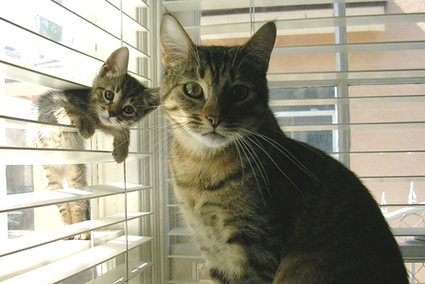
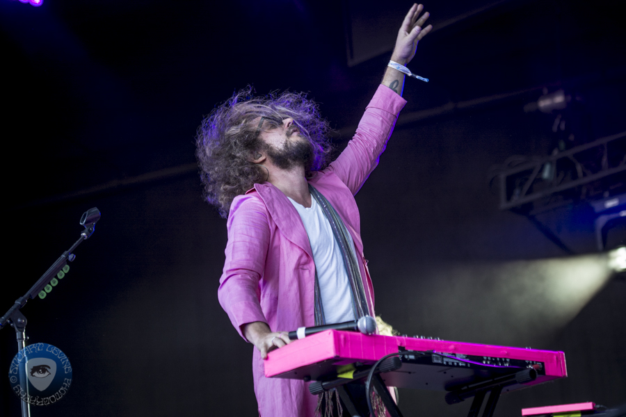

ABOUT ME
Born in 1976 and raised in Eugene, Oregon - although all my people are from the midwest and their people were all from different parts of the south. I lived in Portland '95 to '96, San Francisco '96 to '00 and Brooklyn, NY from '00 to '13. At the tail end of 2012 my Daughter was born, prompting me to move back to Oregon so she could grow up in a healthier enviroment. More trees, less broken glass, that kind of thing.
I grew up skateboarding (and still do!) which introduced me to the music and visual arts that still define who I am. Persued DJing and music production for many years and eventually studied Audio Engineering in Brooklyn followed by, strangely enough, Interior Design at the Fashion Institute of Technology in Manhattan. After finding both of these courses of study ultimately unsatisfying I decided to focus on the work that I had been doing for years inorder to pay the bills and fund my other interests, namely, Bars and Restaurants.
In 2007 I opened a high-end cocktail spot called Huckleberry Bar with a partner and small group of investors. 6 months after we opened the worst recession in 100 years hit (remember that sh*t!?) but we managed to stay afloat and eventually prosopered. As fun and challaging as the cocktail bar was, being a Father and working until 4/5am makes it pretty difficult to raise a child. So after relocating to Portland and opening Mama San Soul Shack, a small family friendly restaurant in our St. Johns neighborhood, I decided it was time to change directions.
I've always been drawn to systems. How to make them run efficiently, reducing steps and solving problems. I enjoy bringing harmony to chaos. There is a certain grace and beauty to be found in it. In my current line of work this is all I do. My attraction to computer programming comes from that same drive for efficency in systems and making complex things simple. Plus, way better hours so I can be more available as a Father.
Pet-Website
A simple webpage exercise for Epicodus about cats, kittens, dogs and puppies. Here I worked with background and text colors, ordered lists and line items, headers, links, images and image sizing. It's pretty ugly truth be told but hey, you've got to start somewhere. Uses Hyper Text Mark Up Language and Cascading Style Sheets.
Cupcake-Shop
Another simple webpage execise for Epicodus' Intro to Programming class. This project introduces the Box Model with various border styles and colors. Also includes ordered lists and line items, headers, images and image sizing and a universal link. It's a little prettier than the pet-website but still pretty ugly. HTML and CSS lanuages used.
Band-Webpage2
Practice, practice, practice. Another webpage exercise and looking a little more styled out but still a long way to go. Here we get into divs, sidebars, floats & columns along with the usual images, sizing, ordered lists. Also some letter spacing and font styling. Using HTML and CSS languages.
INTERESTS - HOBBIES - SKILLS
The things that interest me, in no particular order...
- Stuff and Things
- Things and stuff
- More stuff still
- Can't get enough of Things
Feel free to send me an email about how amazing this websie is!